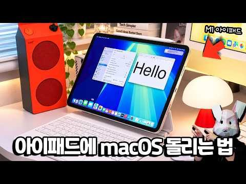

테크 · 유튜브 · 2026-11-22
헨지(Henge) 에뮬레이터로 아이패드·아이폰에서 macOS 실행하기
iOS·iPadOS에서 macOS를 구동하는 에뮬레이터 헨지를 사이드로딩으로 설치하고 M1 아이패드와 아이폰 듀오에서 직접 실행해 본 과정과 사용 소감을 정리한 글이다.

- 헨지는 11월 초 공개된 에뮬레이터로, 미러링이 아니라 아이패드·아이폰 기기 자체에서 macOS를 구동한다.
- 설치 최소 조건은 아이폰 A14 칩·iOS 17 이상, 아이패드 A14·M1 칩·iPadOS 17 이상이며 약 43GB 이상의 저장공간이 필요하다.
- 공식 앱스토어 앱이 아니어서 PC의 아이로더로 사이드스토어를 설치한 뒤 개발자 모드, 앱 신뢰, LocalDevVPN 연결을 거쳐 Henge.ipa를 사이드로딩해야 하며, 무료 개발자 계정은 7일마다 갱신이 필요하다.
- GetMoreRam 앱으로 메모리 제한을 풀어 Extra Memory를 켜고, JIT 페어링 설정을 마친 뒤 앱 내에서 macOS 버전을 골라 설치한다.
- 현재 macOS 내 애플 아이디 로그인 시 오류가 발생해 로그인 단계를 건너뛰어야 하며, 앱스토어 앱 대신 포토샵 등은 웹에서 직접 내려받아 설치할 수 있다.
- 아이폰 듀오에서는 ForceDuoApp으로 헨지의 SDK를 27.1로 바꾸고 해상도를 1920x1320으로 설정해 화면을 꽉 채웠으며, 램 8GB 할당 시 사파리·유튜브·포토샵이 나름 쓸 만했다.
- 구형 칩과 적은 램의 M1 아이패드는 느려 가벼운 작업 외에는 어려웠고, 에뮬레이터의 한계로 아직 진짜 맥을 대체하기는 어렵다는 평가다.